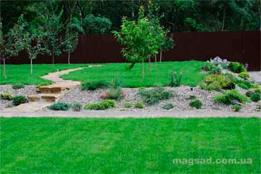

Landscaping
The Magic Garden company Kiev carries out the whole complex of works from soil preparation to laying and lawn care. We use rolled lawn and sowing lawns of our own production with a guarantee of quality. Our experts will be happy to provide you with advice and recommendations on lawn care in Kiev and the region.
We bear a full guarantee and responsibility for the quality of the lawns that we sell. If you find somewhere a little cheaper, believe me - this will entail a decrease in quality! Save your money - do not buy low-quality goods. We sell rolled lawn Kiev directly from the manufacturer and value our reputation!
It is impossible to imagine a modern garden without a lawn. It can be argued without any doubt that the grassy vegetation of lawns in the XX-XXI centuries flooded the whole world. Lawns in America and Western Europe - this is not only an element of landscape art, it is also an element of everyday thinking of everyone who owns at least some piece of garden land.
Famous Ukrainian lawn expert A.A. Laptev, who published a number of monographic works devoted to this case, gives the definition of a lawn: “This is a certain area of a homogeneous territory with artificial turf cover, which is created by sowing and growing turf-forming grasses (mainly perennial cereals) for decorative, sports, soil protection or other purposes. From a geobotanical (phytocenotic) point of view, the lawn turf cover is an artificially created plant group - phytocenosis. "
English scientist D.G. Hession gives an extremely laconic definition of the lawn: "This is a piece of land occupied by cereals forming dense sod."
The word lawn itself is of French origin (gazon) and means a piece of land with a specially created grass cover, in most cases even and short cut.
Lawn grass is an essential element in the decoration of a garden plot. Grass is an excellent backdrop for shrubs, trees and decorative flower groups. The green lawn background calms and balances the colorful variety. A lawn is the basis of any garden, because there may not even be bushes in the garden, but the lawn must be there. A rolled lawn is what makes life in a country house comfortable and aesthetically pleasing.
By the method of creation, lawns are sowing and roll.
Rolled lawn Kiev
Kiev rolled lawn is grown in a special nursery for several years. After the grass is ready, the top layer of the earth, in which the root system of the lawn is located, is cut off using specialized machines and transported to your site. The lawn created in this way is free from weeds and various pests in advance. Rolled lawn is very unpretentious to the environment. This is because the most problematic period of germination of lawn grass from seeds is over at a special nursery under the supervision of specialists.
Depending on the purpose, the lawn grass is divided into several types:
ground grass created in the ground areas of the territory;
ordinary landscape gardening lawns arranged in parks, squares, on boulevards and in most household plots;
sports lawns that have increased resistance against trampling, for this they use a special combination of lawn grasses;
shade-tolerant lawns that suit shady areas;
Moorish lawns, which include flowering plants.
Ground lawns occupy mainly geometric sectors, corners and the central part of green spaces. To get a dense carpet mass, such a lawn needs to be kept low, and therefore often maintained and mowed. For parterre lawns, herbs should be used that will form a dense, low, uniformly closed grass stand with the same bright green color throughout the growing season and will be durable. Most suitable for such a description are low-growing perennial cereals with fairly narrow leaves, thin stems and intensively-growing grasses with a narrow bush structure. The most beautiful and uniform parterre lawn is achieved using a pure culture of cereal grasses: fescue, red and multi-leaved brickfields, meadow bluegrass, thin field birch, pasture ryegrass, shoot grass field, etc.
In conditions when it is difficult to provide a clean culture for arranging ground grass, grass mixtures can be used, but only those species that have a fairly uniform color and texture. And as a result of joint growth, they provide a uniform green carpet with a uniform arrangement of shoots over the entire area.
When creating parterre lawns, to achieve high decorativeness, it is advisable to use rhizome-bush ("Poa pratensis", "Festuca rubra"), loose-bush ("Lolium perenne", "Agrostis tenuis") and stolon-forming cereals ("Agrostis stolonifera"). The lawn grass of these species maximally saturates the lower tier of the lawn with leaves and is capable of vegetative propagation, which is the main condition for its survival with frequent cutting.
Laying a roll lawn Park, it is also a universal lawn, prevails in the construction of most garden plots. With this type of lawn, grass mixtures must be used, which, even in the most adverse conditions, guarantee a certain longevity, decorative value of the grass carpet and a great economic effect.
The main quality of these lawns is their decorativeness, durability, shade tolerance, resistance to frequent mowing, trampling, and also, under certain conditions, drought resistance and frost resistance. To create these lawns, it is necessary to form such grass stands and turf that are resistant to mechanical damage and other adverse factors. Such qualities of lawn turf can be achieved with mixed cultivation of herbs with different types of pagon formation, i.e. those that belong to different life forms: rhizomatous, rhizome-shrubby, loose shrub, less dense shrub and rhizome.
When arranging ordinary landscape gardening lawns, in addition to the above-mentioned cereals, root crops (“Elytrigia repens”, “Poatrivialis”, “Bromopsis inermis”, “Alopecurus pratensis”), soft shrubs (“Lolium multiflorum”, “Festuca pratensis” Phleum pratense ”,“ Cynosurus cristatus ”,“ Anthoxanthum odoratum ”,“ Brachypodium sylvatica ”,“ Agrostis tenuis ”) and stolon-forming cereals (“ Agrostis canina ”).
Lawns of the clearing type are located mainly near arrays with the nature of natural plantings and are used for playing on the lawn and resting.
Sports and game lawns should be covered with turf, which would be distinguished by good bearing capacity, high cohesion, high resistance to mechanical damage and a tendency to quickly dry out. Lawns of this type are mainly created on a fertile land cover of thickness not less than 15 cm, uniform in thickness and structure. The land should be well-drained, characterized, as already noted, highly connected and balanced in nutrient composition.
To form a stable lawn it is necessary to take into account local soil conditions. On dry sandy loamy soils, it is worthwhile to include “Festuca rubra” grass mixtures, on fresh sandy loamy soils “Ranunculus repens”, on fresh loamy soils, “Festuca pratensis”, on wet loamy soils, “Agrostis stolonifera” or “Deschampsia caespitosa”.
With a high acidity of the soil, one should prefer a lawn grass consisting of grass mixtures: “Festuca rubra”, “Achillea submillefolium” and “Taraxacum officinale”, less often - “Agrostis stolonifera”. Under conditions of alkaline soil reaction - “Lolium perenne”, less often - “Festuca rubra”.
Rolled lawns - layingTo create parterre, ordinary landscape gardening and sports lawns, the herbal mix “Lolieta perenni” + “Festuceta rubra” + “Poeta pratensis” can be considered the most optimal. For special meadows and lawns, the lawn grass - “Lolieta perenni” + “Festuceta pratensis” + “Agrosticeta tenuis” + “Festuceta rubra” + “Poeta pratensis” is used.
To summarize the experience of leading experts, we can say that such a grass as "meadow bluegrass" has no equal in resistance to trampling. A reliable enough plant for lawns is the “red fescue”, which is undemanding, can grow on any soil (even with a thin fertile layer), tolerate trampling, frequent cutting, grows well in the sun and in the shade, forms a dense cover.
Recently, Moorish lawns have become fashionable - picturesque lawns created from a mixture of undersized cereals and beautiful flower plants. The lawns of their perennial ground cover plants, forming a dense green carpet (“stonecrop”, “knotweed”, “clover”), look beautiful.
When arranging a lawn, the fertile layer should be at least 25cm. The soil both before sowing grass seeds and before laying a rolled lawn should be rolled with a roller and watered.
Lawn Care
